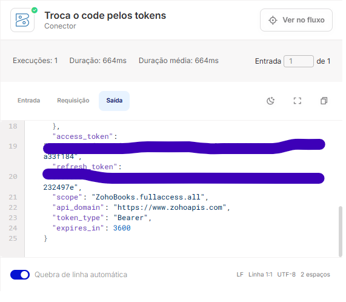
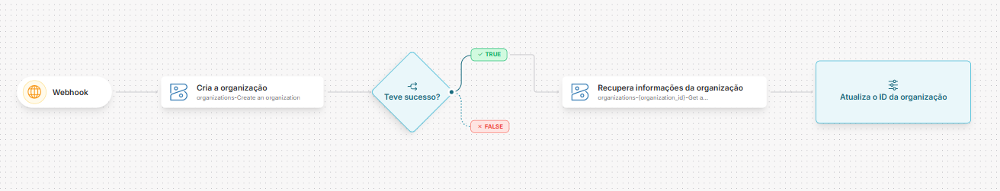

Zoho Books
Introdução
Este artigo detalha como configurar, autenticar e integrar a API do Zoho Books no Skyone Studio usando o template de módulo.
O que é a API do Zoho Books?
A API do Zoho Books utiliza uma arquitetura RESTful para permitir a interação programática com a plataforma de ERP e Gestão Financeira. A comunicação é realizada via protocolo HTTPS, com troca de dados padronizada no formato JSON.
Principais capacidades:
Gestão de Faturamento e Cobrança: Criação e automação de orçamentos, faturas, notas de débito e lembretes de pagamento. Reconciliação Bancária: Importação de extratos, categorização de transações e gestão de contas bancárias. Controle de Projetos e Tempo: Rastreamento de horas trabalhadas, gestão de tarefas e faturamento de projetos.
Conceitos Fundamentais
A estrutura do Zoho Books baseia-se nos seguintes pilares:
Estrutura de Dados e Hierarquia
Para manipular dados com sucesso, é fundamental compreender a hierarquia:
Organization: A entidade de nível mais alto que representa uma empresa ou unidade de negócio individual dentro do sistema. Contacts: Representa Clientes e Fornecedores, sendo a base para todas as transações de venda e compra. Transactions: Documentos financeiros como Invoices (Faturas), Bills (Contas), Credit Notes e Journals.
Pré-requisitos e Configuração no Zoho Books
Para iniciar o desenvolvimento, são necessários:
Conta ativa no Zoho Books. Client ID e Client Secret: Obtida no painel de desenvolvedor da plataforma.
Tipos de Autenticação suportados
A API suporta: OAuth2.
Host e versão da API
| Variável | Valor |
|---|---|
| Host | https://www.zohoapis.<>seu-datacenter</> |
O datacenter faz parte do Host. Substitua
<>seu-datacenter</>pelo TLD da sua conta:com,eu,in,com.au,jp,caousa. Uma conta do datacenter europeu não responde emzohoapis.com. O endpoint de troca de token acompanha o mesmo datacenter — usehttps://accounts.zoho.eu/oauth/v2/tokenpara o DC europeu, e assim por diante.A versão da API é um parâmetro. Toda operação recebe
versioncomo parâmetro, comv3como valor sugerido — o caminho da requisição é montado comobooks/<>version</>/<recurso>. A versão não é fixada no Host para não prender o conector a ela caso a Zoho publique uma versão futura.
Obtendo uma URL de Redirect
No Skyone Studio, acesse API Gateway, crie um Gateway e uma rota sem autenticação como essa:

Você pode ver a URL gerada inteira criando um fluxo e adicionando um gatilho de gateway
Obtendo as credenciais
- Acesse o Zoho API Console
- Clique em Add client e crie um nome identificável, junto da URL gerada na etapa anterior
A homepage URL é irrelevante para esse fluxo de integração, mas necessária para o Zoho, você pode inserir qualquer URL válida como https://google.com
- No client criado, acesse a aba Client Secret e anote o Client ID e o Client Secret exibidos
Configuração da conta no Skyone Studio
- Voltando para o Skyone Studio, no conector do Zoho Books, crie uma conta com os seguintes campos preenchidos:

- Crie uma integração e fluxo para resgatarmos o access_token e o refresh_token
- No fluxo, coloque o gatilho de API Gateway e selecione o gateway e rota criados anteriormente, insira um parâmetro de query com o nome "code"
- Insira no fluxo o conector do Zoho Books, escolha a operação OAuth-Get Access Token, nos parâmetros preencha: o Client ID, o Client Secret e a redirect url (a mesma rota anterior). Em code, arraste o parâmetro query, clique na seta e digite ".code"

- Ative o fluxo e acesse a URL de autenticação do Zoho, veja o formato:
https://accounts.zoho.com/oauth/v2/auth?scope={scopes}&client_id={client_id}&response_type=code&access_type=offline&redirect_uri={redirect_uri}
Use a mesma redirect uri que foi utilizada até agora, scopes representam as permissões obtidas com o token, veja mais sobre eles em Scopes
- Ao final, você deve ser redirecionado para uma tela com um JSON indicando que seu fluxo foi executado, volte ao fluxo e acesse os logs, na ultima execução do módulo do Zoho Books deve constar:

Caso o refresh_token não apareça no log, certifique-se de ter adicionado access_type=offline na URL de autenticação. Se isso ocorrer após autenticações sucessivas, adicione prompt=consent na URL de autenticação.
- Adicione os tokens na configuração da conta e marque a caixa Enviar parâmetros de troca de token como query string.
Operações Disponíveis
Abaixo listamos as operações mapeadas neste conector.
| Nome da Operação | Método HTTP | Descrição da Função |
|---|---|---|
| OAuth2-Get Access Token | POST | Troca o code pelos tokens |
| bankaccounts-Create a bank account | POST | Criação de conta bancária ou cartão de crédito para sua organização. |
| bankstatements-Import a Bank/Credit Card Statement | POST | Importe extratos bancários e de cartão de crédito para sua conta. |
| bankaccounts-{account_id}-Delete an account | DELETE | Remova conta bancária da sua organização. |
| bankaccounts-List view of accounts | GET | Lista todas as contas bancárias e de cartão de crédito da sua organização. |
| employees-Create an employee | POST | Cria um funcionário para uma despesa. |
| settings-currencies-{currency_id}-exchangerates-Create an exchange rate | POST | Criar taxa de câmbio para a moeda especificada. |
| estimates-{estimate_id}-status-sent-Mark an estimate as sent | POST | Marcar proposta em rascunho como enviada. |
| estimates-{estimate_id}-status-accepted-Mark an estimate as accepted | POST | Marcar estimativa enviada como aceita se o cliente concordar. |
| estimates-{estimate_id}-submit-Submit an estimate for approval | POST | Enviar orçamento para aprovação. |
| estimates-{estimate_id}-address-billing-Update billing address | PUT | Atualiza apenas o endereço de cobrança deste orçamento. |
| estimates-{estimate_id}-comments-Add Comments | POST | Adiciona comentário a uma estimativa. |
| estimates-Create an Estimate | POST | Criar orçamento para seu cliente. |
| estimates-update an Estimate using a custom field's unique value | PUT | Atualiza ou cria estimativa usando valor único de campo personalizado via cabeçalhos X‑Unique‑Identifier. |
| customerpayments-List Customer Payments | GET | Lista todos os pagamentos efetuados pelo cliente. |
| invoices-{debit_note_id}-Update a customer debit note | PUT | Atualiza nota de débito de cliente; remover item exclui linha. |
| invoices-{debit_note_id}-Delete a customer debit note | DELETE | Exclui nota de débito do cliente se não possuir pagamentos ou créditos aplicados. |
| invoices-List customer debit notes | GET | Obtenha uma lista de notas de débito de clientes com paginação, filtro, busca e ordenação. |
| settings-currencies-{currency_id}-exchangerates-{exchange_rate_id}-Get an exchange rate. | GET | Obter detalhes de uma taxa de câmbio associada à moeda. |
| settings-currencies-{currency_id}-exchangerates-{exchange_rate_id}-Delete an exchage rate | DELETE | Excluir taxa de câmbio específica da moeda. |
| invoices-{invoice_id}-writeoff-Write off invoice | POST | Baixa do saldo de uma fatura. |
| fixedassettypes-Get fixed asset type list | GET | Lista de tipos de ativos fixos. |
| fixedassettypes-{fixed_asset_type_id}-Delete a fixed asset type | DELETE | Deleta o tipo de ativo fixo especificado. |
| fixedassets-{fixed_asset_id}-Get fixed asset | GET | Retorna os detalhes do ativo fixo especificado por ID. |
| fixedassets-{fixed_asset_id}-status-cancel-Cancel fixed asset | POST | Cancelar ativo fixo |
| invoices-Update an invoice using a custom field's unique value | PUT | Atualiza ou cria fatura usando valor único de campo customizado. |
| invoices-List invoices | GET | Exibe lista de faturas com paginação, filtro, busca e ordenação. Ideal para consultar registros. |
| invoices-templates-List invoice templates | GET | Listar todos os modelos de PDF de fatura |
| invoices-pdf-Bulk export Invoices | GET | Exporta até 25 faturas em um único PDF em lote. |
| invoices-paymentreminder-Bulk invoice reminder | POST | Enviar lembrete por e‑mail para até 10 faturas abertas ou vencidas. |
| invoices-{invoice_id}-Delete an invoice | DELETE | Excluir fatura existente; não exclui se tiver pagamentos ou notas de crédito. |
| invoices-{invoice_id}-comments-{comment_id}-Update comment | PUT | Atualiza um comentário existente de uma fatura. |
| invoices-{invoice_id}-documents-{document_id}-Retrieve Invoice Document | GET | Recupera documento de fatura usando ID e opções avançadas. |
| invoices-{invoice_id}-attachment-Get last attached attachment | GET | Retorna o arquivo anexado à fatura. |
| invoices-{invoice_id}-creditsapplied-{creditnotes_invoice_id}-Delete applied credit | DELETE | Excluir um crédito aplicado a uma fatura específica. |
| invoices-{invoice_id}-payments-List invoice payments | GET | Lista os pagamentos efetuados para uma fatura especificada. |
| banktransactions-Get transactions list | GET | Recupera todas as transações de uma conta. |
| contacts-contactpersons-Create a contact person | POST | Cria uma pessoa de contato associada a um contato. |
| invoices-print-Bulk print invoices | GET | Exporta e imprime até 25 faturas em PDF. |
| banktransactions-uncategorized-{transaction_id}-categorize-Categorize an uncategorized transaction | POST | Classifica uma transação não categorizada, criando uma nova entrada. |
| banktransactions-uncategorized-{transaction_id}-match-Match a transaction | POST | Associa transação não categorizada a outra existente na conta. |
| bankaccounts-{account_id}-Update bank account | PUT | Atualiza os dados da conta bancária existente. |
| bankaccounts-rules-{rule_id}-Get a rule | GET | Obter detalhes de uma regra específica. |
| banktransactions-{transaction_id}-unmatch-Unmatch a matched transaction | POST | Desvincula uma transação já vinculada, tornando-a não categorizada. |
| banktransactions-uncategorized-{transaction_id}-categorize-creditnoterefunds-Categorize as credit note refunds | POST | Categoriza transação não categorizada como reembolso de nota de crédito. |
| banktransactions-uncategorized-{transaction_id}-match-Get matching transactions | GET | Pesquise e associe transações não categorizadas, gerando pagamentos ou reembolsos. |
| basecurrencyadjustment-{base_currency_adjustment_id}-Get a base currency adjustment | GET | Recupera detalhes de ajuste de moeda base. |
| bills-Update a bill using a custom field's unique value | PUT | Atualiza fatura pelo valor único de campo customizado; cria se não existir e X-Upsert verdadeiro. |
| bills-{bill_id}-attachment-Delete an attachment | DELETE | Exclui anexo associado a uma fatura. |
| bills-{bill_id}-attachment-Add attachment to a bill | POST | Anexa um arquivo a uma conta. |
| chartofaccounts-transactions-List of transactions for an account | GET | Listar todas transações envolvidas da conta fornecida. |
| chartofaccounts-{account_id}-Update an account | PUT | Atualiza as informações da conta no plano de contas. |
| contacts-{contact_id}-contactpersons-{contact_person_id}-Get a contact person | GET | Detalhar o contato de uma pessoa no registro de contatos. |
| creditnotes-{creditnote_id}-email-Get email content | GET | Recupera conteúdo de e‑mail de uma nota de crédito pelo ID |
| contacts-Update a contact using a custom field's unique value | PUT | Atualiza contato pelo valor exclusivo de campo customizado; cria novo se X-Upsert ativo. |
| contacts-{contact_id}-Update a Contact | PUT | Atualiza contato existente com dados comerciais, endereços, pessoas, termos de pagamento e campos personalizados. |
| contacts-{contact_id}-address-Get Contact Addresses | GET | Obter endereços de um contato, incluindo entrega, cobrança e outros. |
| contacts-{contact_id}-statements-email-Email Statement | POST | Enviar extrato por e-mail ao contato, usando conteúdo padrão se JSON não informado. |
| creditnotes-Create a credit note | POST | Criar nota de crédito para devoluções, excessos ou ajustes com moedas e cálculos de impostos. |
| creditnotes-templates-List credit note template | GET | Lista todos os modelos de PDF de nota de crédito. |
| creditnotes-{creditnote_id}-Delete a credit note | DELETE | Excluir uma nota de crédito existente. |
| creditnotes-{creditnote_id}-Get a credit note | GET | Detalhes de uma nota de crédito existente. |
| creditnotes-{creditnote_id}-refunds-Refund credit note | POST | Reembolsa o valor total da nota de crédito. |
| creditnotes-{creditnote_id}-address-shipping-Update Shipping address | PUT | Atualiza o endereço de envio de uma nota de crédito existente. |
| creditnotes-{creditnote_id}-emailhistory-Email history | GET | Obtém histórico de e‑mails de uma nota de crédito. |
| creditnotes-{creditnote_id}-approve-Approve a credit note. | POST | Aprovar nota de crédito. |
| creditnotes-{creditnote_id}-status-open-Convert to Open | POST | Converte nota de crédito de rascunho para aberto. |
| creditnotes-{creditnote_id}-status-draft-Convert Credit Note to Draft. | POST | Converte nota de crédito cancelada em rascunho. |
| customerpayments-{payment_id}-Update a payment | PUT | Atualiza informações de um pagamento existente. |
| expenses-Update an expense using a custom field's unique value | PUT | Atualiza despesa pelo valor exclusivo de campo personalizado, criando se não existir. |
| employee-{employee_id}-Delete an employee | DELETE | Exclui um funcionário existente. |
| estimates-{estimate_id}-email-Get estimate email content | GET | Obter o conteúdo de e‑mail de um orçamento. |
| estimates-{estimate_id}-address-shipping-Update shipping address | PUT | Atualiza o endereço de entrega de uma estimativa existente. |
| estimates-{estimate_id}-Delete an Estimate | DELETE | Apagar um orçamento existente. |
| estimates-email-Email multiple estimates | POST | Envio de até 10 orçamentos por e-mail aos clientes. |
| estimates-pdf-Bulk export estimates | GET | Exporta até 25 estimativas em um único PDF. |
| estimates-print-Bulk print estimates | GET | Exporta e imprime até 25 estimativas em PDF. |
| expenses-List Expenses | GET | Lista todas as despesas paginadas. |
| customerpayments-{customer_payment_id}-refunds-{refund_id}-Delete a Refund | DELETE | Remove reembolso associado a pagamento de cliente existente. |
| customerpayments-Bulk delete Customer payments | DELETE | Exclui várias parcelas de pagamento de clientes de uma só vez. |
| {module_name}-{module_id}-Update Custom Module | PUT | Atualiza um módulo personalizado existente identificando pelo nome e chave. |
| {module_name}- Delete Custom Modules | DELETE | Exclui um módulo personalizado especificado pelo nome no caminho. |
| settings-currencies-Create a Currency | POST | Cria uma moeda para transação. |
| settings-currencies-List Currencies | GET | Lista as moedas configuradas. |
| creditnotes-{creditnote_id}-status-void-Void a Credit Note | POST | Marcar nota de crédito como anulada. |
| creditnotes-{creditnote_id}-address-billing-Update billing address | PUT | Atualiza o endereço fiscal de uma nota de crédito existente. |
| expenses-{expense_id}-Get an Expense | GET | Obter detalhes de uma despesa. |
| expenses-{expense_id}-attachment-Add attachment to an expense | POST | Anexa arquivos a uma despesa, retornando detalhes dos documentos adicionados. |
| expenses-{expense_id}-receipt-Delete a receipt | DELETE | Excluir o comprovante anexado à despesa. |
| expenses-{expense_id}-receipt-Get an expense receipt | GET | Recupera o recibo de uma despesa. |
| expenses-{expense_id}-comments-List expense History & Comments | GET | Obtém histórico e comentários do despesa. |
| fixedassettypes-{fixed_asset_type_id}-Update a fixed asset type | PUT | Atualiza o tipo de ativo fixo com as informações fornecidas. |
| fixedassets-Get fixed asset list | GET | Lista de ativos fixos |
| fixedassets-{fixed_asset_id}-Update a fixed asset | PUT | Atualiza informações do ativo fixo identificado por ID. |
| fixedassets-{fixed_asset_id}-comments-{comment_id}-Delete a comment | DELETE | Excluir comentário do ativo fixo identificado. |
| fixedassets-{fixed_asset_id}-sell-Sell fixed asset | POST | Vende um ativo fixo identificado pelo ID. |
| fixedassets-{fixed_asset_id}-status-active-Mark fixed asset as active | POST | Marcar o ativo como ativo para iniciar a depreciação. |
| fixedassets-{fixed_asset_id}-forecast-Get fixed asset's forecast depreciation | GET | Mostra resumo detalhado das depreciações futuras do ativo. |
| fixedassets-{fixed_asset_id}-history-Get fixed asset history | GET | Exibe sumário detalhado do ativo, desde aquisição até baixa. |
| invoices-expenses-{expense_id}-receipt-Delete the expense receipt | DELETE | Exclui recibo de despesa anexado a fatura gerada por despesa. |
| invoices-mapwithorder-Associate invoices with sales order | POST | Associa uma ou mais faturas existentes a um pedido de venda. |
| bills-{bill_id}-approve-Approve a bill | POST | Aprovar fatura. |
| invoices-{invoice_id}-status-void-Void an invoice | POST | Anular fatura: muda status para void, liberta pagamentos e créditos ao cliente. |
| items-Create an Item | POST | Cria um novo item. |
| items-{item_id}-Get an item | GET | Retorna os detalhes de um item existente. |
| journals-Create a journal | POST | Criar um diário. |
| journals-{journal_id}-Delete a journal | DELETE | Deleta o diário especificado. |
| journals-{journal_id}-comments-{comment_id}-Delete a comment | DELETE | Excluir comentário de diário. |
| locations-Create a location | POST | Cria um local. |
| locations-{location_id}-Delete a location | DELETE | Exclui o local especificado por location_id, removendo-o do sistema. |
| banktransactions-uncategorized-{transaction_id}-categorize-expenses-Categorize as expense | POST | Classifica uma transação sem categoria como despesa. |
| banktransactions-{bank_transaction_id}-Delete a transaction | DELETE | Deleta uma transação de conta usando o ID especificado. |
| banktransactions-{bank_transaction_id}-Get transaction | GET | Obter detalhes de uma transação usando seu ID. |
| basecurrencyadjustment-List base currency adjustment | GET | Lista ajustes de moeda base. |
| bill-{bill_id}-customfields-Update custom field in existing bills | PUT | Atualiza o valor de campo personalizado em uma fatura existente. |
| bills-{bill_id}-payments-List bill payments | GET | Lista de pagamentos realizados para uma fatura. |
| bills-{bill_id}-address-billing-Update billing address | PUT | Atualiza o endereço de cobrança da fatura. |
| invoices-{invoice_id}-writeoff-cancel-Cancel write off | POST | Cancelar o valor de baixa de uma fatura. |
| chartofaccounts-Create an account | POST | Criar conta com tipo especificado |
| chartofaccounts-transactions-{transaction_id}-Delete a transaction | DELETE | Exclui a transação pelo ID. |
| chartofaccounts-{account_id}-inactive-Mark an account as inactive | POST | Atualiza o status da conta para inativo. |
| chartofaccounts-{account_id}-active-Mark an account as active | POST | Atualiza o status da conta para ativa. |
| contacts-contactpersons-{contact_person_id}-Delete a contact person | DELETE | Excluir pessoa de contato existente. |
| contacts-{contact_id}-Delete a Contact | DELETE | Remove contato existente. |
| contacts-{contact_id}-Get Contact | GET | Recupera dados completos de um contato, incluindo endereços, termos de pagamento e histórico financeiro. |
| contacts-{contact_id}-track1099-Track 1099 | POST | Rastreia um contato para relatório 1099 (disponível apenas nos EUA). |
| contacts-{contact_id}-statements-email-Get Statement Mail Content | GET | Conteúdo do e‑mail de extrato para contato. |
| contacts-{contact_id}-paymentreminder-enable-Enable Payment Reminders | POST | Ativa lembretes automatizados de pagamento para um contato. |
| creditnotes-Update a credit note using a custom field's unique value | PUT | Atualiza nota de crédito pelo valor único de um campo personalizado, criando se necessário. |
| creditnotes-{creditnote_id}-refunds-List refunds of a credit note | GET | Lista todos os estornos de uma nota de crédito existente. |
| creditnotes-{creditnote_id}-refunds-{creditnote_refund_id}-Get credit note refund | GET | Retorna o reembolso de uma nota de crédito específica. |
| creditnotes-{creditnote_id}-comments-List credit note comments & history | GET | Buscar histórico e comentários de uma nota de crédito. |
| creditnotes-{creditnote_id}-comments-{comment_id}-Delete a Comment | DELETE | Excluir comentário de nota de crédito por ID. |
| creditnotes-{creditnote_id}-comments-Add a comment | POST | Adicionar comentário a nota de crédito existente. |
| customerpayments-Create a payment | POST | Criar um novo pagamento. |
| {module_name}-{module_id}-Get Individual Record Details | GET | Recupera os detalhes de uma organização individual usando o caminho {module_name}/{module_id}. |
| {module_name}-Get Record List of a Custom Module | GET | Lista de registros do módulo {module_name} |
| {module_name}-Create Custom Modules | POST | Cria um módulo personalizado com argumentos fornecidos. |
| settings-currencies-{currency_id}-exchangerates-{exchange_rate_id}-Update an exchange rate | PUT | Atualiza os detalhes de taxa de câmbio de uma moeda específica. |
| creditnotes-{creditnote_id}-email-Email a credit note | POST | Envia nota de crédito por e‑mail. |
| creditnotes-{creditnote_id}-submit-Submit a credit note for approval | POST | Envio de nota de crédito para aprovação. |
| creditnotes-{creditnote_id}-invoices-{creditnote_invoice_id}-Delete invoices credited | DELETE | Excluir créditos aplicados à fatura. |
| customerpayments-{payment_id}-Delete a payment | DELETE | Exclui pagamento existente. |
| creditnotes-{creditnote_id}-refunds-{creditnote_refund_id}-Update credit note refund | PUT | Atualiza o estorno de uma nota de crédito. |
| creditnotes-{creditnote_id}-refunds-{creditnote_refund_id}-Delete credit note refund | DELETE | Excluir reembolso de nota de crédito |
| creditnotes-{creditnote_id}-Update a credit note | PUT | Atualiza os detalhes de uma nota de crédito existente. |
| creditnotes-List all Credit Notes | GET | Lista notas de crédito com paginação e filtros por data, status, valor e cliente. |
| contacts-{contact_id}-active-Mark as Active | POST | Marca o contato como ativo. |
| contacts-{contact_id}-email-Email Contact | POST | Enviar e-mail ao contato. |
| contacts-{contact_id}-address-{address_id}-Edit Additional Address | PUT | Edita endereço adicional de contato especificando ID de contato e ID de endereço. |
| contacts-{contact_id}-address-Add Additional Address | POST | Adiciona um endereço adicional a um contato com os parâmetros fornecidos. |
| estimate-{estimate_id}-customfields-Update custom field in existing estimates | PUT | Atualiza campo personalizado de estimativa especificada. |
| estimates-templates-List estimate template | GET | Obter todas as templates PDF de estimativas. |
| estimates-{estimate_id}-Get an estimate | GET | Recupera os detalhes de um orçamento existente. |
| estimates-{estimate_id}-comments-{comment_id}-Update comment | PUT | Atualiza comentário existente de uma estimativa. |
| estimates-{estimate_id}-templates-{template_id}-Update estimate template | PUT | Atualiza o modelo PDF vinculado ao orçamento. |
| estimates-{estimate_id}-approve-Approve an estimate. | POST | Aprova estimativa. |
| employees-List employees | GET | Lista empregados com paginação. |
| employees-{employee_id}-Get an employee | GET | Recupera detalhes de um empregado pelo ID. |
| expenses-Create an Expense | POST | Criar despesa (cobrável ou não). |
| fixedassets-{fixed_asset_id}-Delete a fixed asset | DELETE | Exclui o ativo fixo especificado. |
| fixedassets-{fixed_asset_id}-status-draft-Mark fixed asset as draft | POST | Marcar ativo fixo como rascunho. |
| invoice-{invoice_id}-customfields-Update custom field in existing invoices | PUT | Atualiza o valor do campo personalizado em faturas existentes. |
| invoices-fromsalesorder-Create an instant invoice | POST | Faz fatura instantânea de todos os pedidos de venda confirmados selecionados. |
| invoices-{invoice_id}-Get an invoice | GET | Recupere os detalhes de uma fatura específica. |
| invoices-{invoice_id}-documents-{document_id}-Delete Invoice attachment | DELETE | Excluir anexo de fatura que não seja gerado pelo sistema. |
| banktransactions-uncategorized-{transaction_id}-categorize-vendorcreditrefunds-Categorize as vendor credit refunds | POST | Categorização de uma transação não categorizada como reembolso de crédito de fornecedor. |
| bankaccounts-{account_id}-active-Activate account | POST | Torna a conta bancária ativa. |
| bankaccounts-{account_id}-inactive-Deactivate account. | POST | Tornar conta bancária inativa. |
| banktransactions-Create a transaction for an account | POST | Criar transação bancária conforme tipos de transação permitidos. |
| banktransactions-uncategorized-{statement_line_id}-categorize-paymentrefunds-Categorize as Customer Payment refund | POST | Categorizando transações bancárias como reembolso de pagamento. |
| banktransactions-uncategorized-{transaction_id}-categorize-customerpayments-Categorize as customer payment | POST | Categoriza uma transação não categorizada como pagamento do cliente. |
| banktransactions-uncategorized-{transaction_id}-categorize-vendorpayments-Categorize a vendor payment | POST | Classifica transação sem categoria como pagamento de fornecedor. |
| banktransactions-uncategorized-{transaction_id}-restore-Restore a transaction | POST | Restaurar transação excluída. |
| banktransactions-uncategorized-{transaction_id}-exclude-Exclude a transaction | POST | Excluir uma transação da sua conta bancária ou cartão de crédito. |
| bankaccounts-{account_id}-statement-{statement_id}-Delete last imported statement | DELETE | Exclui a declaração previamente importada da conta. |
| bankaccounts-{account_id}-statement-lastimported-Get last imported statement | GET | Obtenha os detalhes do último extrato importado da conta. |
| bankaccounts-rules-Create a rule | POST | Cria regra que aplica em depósitos/saques bancários e reembolsos/cobranças de cartão. |
| bankaccounts-rules-{rule_id}-Delete a rule | DELETE | Remove regra e impede sua aplicação nas transações. |
| bankaccounts-rules-{rule_id}-Update a rule | PUT | Atualiza regras existentes: modifica ou adiciona parâmetros. |
| banktransactions-{transaction_id}-uncategorize-Uncategorize a categorized transaction | POST | Reverte uma transação categorizada para não categorizada. |
| banktransactions-uncategorized-{statement_line_id}-categorize-vendorpaymentrefunds-Categorize as Vendor Payment refund | POST | Classificar transações bancárias como reembolso de pagamento a fornecedor. |
| basecurrencyadjustment-Create a base currency adjustment | POST | Cria um ajuste de moeda base com as informações fornecidas. |
| banktransactions-{bank_transaction_id}-Update a transaction | PUT | Atualiza transação existente com campos modificados. |
| basecurrencyadjustment-accounts-List account details for base currency adjustment | GET | Listar contas afetadas por transações com efeito à taxa de câmbio fornecida. |
| basecurrencyadjustment-{base_currency_adjustment_id}-Delete a base currency adjustment | DELETE | Exclui o ajuste de moeda base identificado pelo ID. |
| bills-Create a bill | POST | Cria fatura recebida do fornecedor. |
| bills-{bill_id}-Get a bill | GET | Recupera os detalhes de uma fatura específica. |
| bills-{bill_id}-comments-List bill comments & history | GET | Mostra histórico e comentários de uma fatura. |
| bills-{bill_id}-comments-{comment_id}-Delete a comment | DELETE | Apaga o comentário da conta especificada. |
| bills-{bill_id}-attachment-Get a bill attachment | GET | Recupera o arquivo de anexo da fatura. |
| bills-{bill_id}-credits-Apply credits | POST | Aplica créditos de pagamento excedente a fatura, permitindo múltiplos créditos simultâneos. |
| bills-{bill_id}-submit-Submit a bill for approval | POST | Enviar fatura para aprovação. |
| chartofaccounts-List chart of accounts | GET | Listar todas as contas do plano com paginação |
| chartofaccounts-{account_id}-Delete an account | DELETE | Exclui conta se não vinculada a transações ou produtos. |
| chartofaccounts-{account_id}-Get an account | GET | Obter detalhes de uma conta. |
| contacts-{contact_id}-receivables-unusedretainerpayments-Get Unused Retainer Payments | GET | Recupera pagamentos de retenção não usados de um contato, informando créditos disponíveis. |
| contacts-{contact_id}-untrack1099-Untrack 1099 | POST | Interrompe o acompanhamento de pagamentos a fornecedores para relatórios 1099, disponível apenas nos EUA. |
| estimates-{estimate_id}-Update an Estimate | PUT | Atualiza estimativa existente, removendo itens deletando-os da lista de line_items. |
| fixedassettypes-Create a fixed asset type | POST | Cria um tipo de ativo fixo. |
| expenses-{expense_id}-receipt-Add receipt to an expense. | POST | Anexa um recibo à despesa. |
| expenses-{expense_id}-Update an Expense | PUT | Atualiza despesa existente. |
| expenses-{expense_id}-Delete an Expense | DELETE | Exclui despesa existente com ID fornecido. |
| estimates-{estimate_id}-status-declined-Mark an estimate as declined | POST | Marcar estimativa enviada como recusada se cliente rejeitou. |
| estimates-{estimate_id}-email-Email an estimate | POST | Envia um orçamento ao cliente; mensagem opcional, usa padrão se vazia. |
| estimates-{estimate_id}-comments-{comment_id}-Delete a comment | DELETE | Excluir comentário de estimativa. |
| estimates-{estimate_id}-comments-List estimate comments & history | GET | Obter todo histórico e comentários de uma estimativa. |
| fixedassets-Create a fixed asset | POST | Criação de ativo fixo. |
| estimates-List estimates | GET | Listar estimativas paginadas. |
| customerpayments-{payment_id}-Retrieve a payment | GET | Detalhes de um pagamento existente. |
| customerpayments-{customer_payment_id}-refunds-{refund_id}-Details of a refund | GET | Obter detalhes de um reembolso de pagamento de cliente |
| customerpayments-{customer_payment_id}-refunds-{refund_id}-Update a refund | PUT | Atualiza reembolso de pagamento do fornecedor. |
| customerpayments-{customer_payment_id}-refunds-List refunds of a customer payment | GET | Lista todos os reembolsos de um pagamento de cliente existente. |
| customerpayments-{customer_payment_id}-refunds-Refund an excess customer payment | POST | Reembolsar o valor excedente pago pelo cliente. |
| customerpayments-Update a payment using a custom field's unique value | PUT | Atualiza pagamento usando valor único de campo customizado, com upsert opcional. |
| customerpayment-{customer_payment_id}-customfields-Update custom field in existing customerpayments | PUT | Atualiza o valor de um campo personalizado em pagamentos de clientes existentes. |
| fixedassets-{fixed_asset_id}-comments-Add a comment | POST | Adicionar um comentário ao ativo fixo. |
| fixedassets-{fixed_asset_id}-writeoff-Write off fixed asset | POST | Baixa do ativo fixo. |
| share-paymentlink-Generate payment link | GET | Cria link de pagamento para fatura com data de expiração. |
| invoices-Create an invoice | POST | Criar fatura para o cliente. |
| invoices-{invoice_id}-comments-Add comment | POST | Adicionar comentário a fatura. |
| invoices-{invoice_id}-comments-List invoice comments & history | GET | Lista histórico completo e comentários de uma fatura. |
| invoices-{invoice_id}-comments-{comment_id}-Delete a comment | DELETE | Remover comentário da fatura. |
| invoices-{invoice_id}-creditsapplied-List credits applied | GET | Lista créditos aplicados em uma fatura específica. |
| invoices-{invoice_id}-payments-{invoice_payment_id}-Delete a payment | DELETE | Excluir pagamento associado a fatura. |
| invoices-{invoice_id}-templates-{template_id}-Update invoice template | PUT | Atualiza o modelo PDF vinculado à fatura |
| invoices-{invoice_id}-email-Email an invoice | POST | Envia fatura ao cliente; conteúdo padrão se json vazio. |
| invoices-{invoice_id}-status-draft-Mark as draft | POST | Marcar fatura anulada como rascunho |
| items-{item_id}-inactive-Mark as inactive | POST | Marcar item ativo como inativo. |
| items-{item_id}-active-Mark as active | POST | Marcar um item inativo como ativo. |
| bankaccounts-{account_id}-Get account details | GET | Retorna detalhes completos da conta especificada. |
| contacts-{contact_id}-comments-List Comments | GET | Lista atividades recentes de um contato. |
| bills-List bills | GET | Lista faturas com paginação. |
| bills-editpage-frompurchaseorders-Convert PO to Bill | GET | Cria fatura a partir de notas de compra selecionadas, retornando payload. |
| bills-{bill_id}-Delete a bill | DELETE | Exclua fatura existente; não permitido se houver pagamentos aplicados. |
| bills-{bill_id}-Update a bill | PUT | Atualiza fatura; remova itens da lista para excluí-los. |
| bills-{bill_id}-comments-Add comment | POST | Adicionar um comentário à fatura especificada. |
| bills-{bill_id}-payments-{bill_payment_id}-Delete a payment | DELETE | Remove pagamento efetuado em uma conta. |
| bills-{bill_id}-status-open-Mark a bill as open | POST | Marcar uma fatura anulada como aberta. |
| bills-{bill_id}-status-void-Void a bill | POST | Marca o status do boleto como anulado. |
| contacts-{contact_id}-contactpersons-List contact persons | GET | Listar todos os contatos com paginação. |
| contacts-contactpersons-{contact_person_id}-Update a contact person | PUT | Atualiza uma pessoa de contato existente. |
| contacts-contactpersons-{contact_person_id}-primary-Mark as primary contact person | POST | Definir pessoa de contato como principal para o contato. |
| contacts-List Contacts | GET | Recupera lista completa de contatos com filtros avançados por nome, empresa, email, etc., e ordenação. |
| contacts-Create a Contact | POST | Criação de contato completo com nome, empresa, endereço e termos de pagamento. |
| contacts-{contact_id}-refunds-List Refunds | GET | Listar histórico de reembolsos de um contato. |
| contacts-{contact_id}-address-{address_id}-Delete Additional Address | DELETE | Exclui endereço adicional de contato. |
| bankaccounts-rules-Get Rules List | GET | Lista todas as regras de uma conta bancária ou cartão de crédito específica. |
| contacts-{contact_id}-paymentreminder-disable-Disable Payment Reminders | POST | Desabilita lembretes de pagamento automáticos para um contato. |
| contacts-{contact_id}-portal-enable-Enable Portal Access | POST | Habilita acesso ao portal para um contato. |
| contacts-{contact_id}-inactive-Mark as Inactive | POST | Marcar contato como inativo. |
| creditnotes-refunds-List credit note refunds | GET | Lista todos os estornos de notas de crédito com paginação. |
| creditnotes-{creditnote_id}-invoices-Credit to an invoice | POST | Aplica a nota de crédito a faturas existentes. |
| creditnotes-{creditnote_id}-invoices-List invoices credited | GET | Lista as faturas nas quais a nota de crédito é aplicada. |
| creditnotes-{creditnote_id}-templates-{template_id}-Update a credit note template | PUT | Atualiza o modelo PDF vinculado à nota de crédito. |
| settings-currencies-{currency_id}-Delete a currency | DELETE | Elimina moeda, excluindo apenas se não houver transações associadas. |
| settings-currencies-{currency_id}-Get a Currency | GET | Obter os detalhes de uma moeda específica. |
| settings-currencies-{currency_id}-Update a Currency | PUT | Atualiza os detalhes de uma moeda. |
| settings-currencies-{currency_id}-exchangerates-List exchange rates | GET | Listar taxas de câmbio configuradas para a moeda. |
| {module_name}-Bulk Update Custom Module | PUT | Atualiza em massa registros de módulo personalizado. |
| {module_name}-{module_id}-Delete individual records | DELETE | Exclui registro individual de módulo personalizado usando o argumento abaixo. |
| invoices-Create a customer debit note | POST | Cria nota de débito do cliente para ajustes e cobranças adicionais à fatura original. |
| invoices-{debit_note_id}-Get a customer debit note | GET | Recupera os detalhes de uma nota de débito para cliente. |
| items-Update an item using a custom field's unique value | PUT | Atualiza item pelo valor único de campo personalizado via cabeçalhos X-Unique-… e opcionalmente X-Upsert |
| purchaseorders-{purchase_order_id}-Get a purchase order | GET | Retorna detalhes de uma ordem de compra. |
| purchaseorders-{purchaseorder_id}-status-billed-Mark as billed | POST | Marcar ordem de compra como faturada. |
| purchaseorders-{purchaseorder_id}-email-Email a purchase order | POST | Enviar nota de compra por e‑mail ao fornecedor, com conteúdo padrão se opcional vazio. |
| purchaseorders-{purchaseorder_id}-attachment-Update attachment preference | PUT | Define se deseja enviar arquivo anexado ao enviar e-mail da ordem de compra. |
| purchaseorders-{purchaseorder_id}-attachment-Delete an attachment | DELETE | Excluir arquivo anexado à ordem de compra. |
| invoices-{invoice_id}-attachment-Update attachment preference | PUT | Determine se deve enviar o anexo ao e‑mail da fatura. |
| invoices-{invoice_id}-attachment-Add attachment to an invoice | POST | Anexa um arquivo a uma fatura. |
| invoices-{invoice_id}-paymentreminder-Get payment reminder mail content | GET | Conteúdo do e‑mail de lembrete de pagamento |
| invoices-{invoice_id}-paymentreminder-Remind Customer | POST | Enviar lembrete por e-mail apenas para faturas em aberto ou vencidas. |
| invoices-{invoice_id}-approve-Approve an invoice. | POST | Aprovar fatura. |
| invoices-{invoice_id}-submit-Submit an invoice for approval | POST | Enviar fatura para aprovação. |
| itemdetails-Bulk fetch item details | GET | Obtém detalhes de itens para os IDs informados. |
| purchaseorders-{purchase_order_id}-Update a purchase order | PUT | Atualiza uma ordem de compra existente. |
| items-List items | GET | Lista itens ativos com paginação. |
| items-{item_id}-Delete an item | DELETE | Excluir item se não pertence a uma transação em curso. |
| items-{item_id}-Update an item | PUT | Atualiza os detalhes de um item. |
| locations-{location_id}-active-Mark as Active | POST | Marcar local como ativo. |
| organizations-List organizations | GET | Lista todas as organizações disponíveis. |
| projects-Update a project using a custom field's unique value | PUT | Atualiza projeto pelo valor único de campo personalizado, criando novo se não existir e X-Upsert |
| projects-List projects | GET | Lista todos os projetos com paginação. |
| projects-{project_id}-Get a project | GET | Detalhes de um projeto específico por ID. |
| projects-{project_id}-comments-List comments | GET | Lista comentários de um projeto. |
| projects-{project_id}-users-List Users | GET | Lista usuários associados ao projeto. |
| projects-{project_id}-users-Assign users | POST | Atribui usuários ao projeto especificado. |
| projects-{project_id}-users-{user_id}-Update user | PUT | Atualiza os dados de um usuário em um projeto. |
| salesorders-templates-List sales order templates | GET | Lista todos os templates PDF de pedidos de venda. |
| salesorders-Create a sales order | POST | Criar pedido de venda para seu cliente. |
| salesorders-print-Bulk print sales orders | GET | Exporta até 25 pedidos em PDF para impressão em massa. |
| salesorders-{salesorder_id}-Get a sales order | GET | Detalhes de um pedido de venda. |
| salesorders-{salesorder_id}-comments-Add comment | POST | Adicionar comentário a uma ordem de venda. |
| salesorders-{salesorder_id}-comments-{comment_id}-Delete a comment | DELETE | Excluir um comentário da ordem de venda. |
| salesorders-{salesorder_id}-attachment-Update attachment preference | PUT | Defina se o arquivo anexado deve ser enviado por e‑mail da ordem de venda. |
| salesorders-{salesorder_id}-address-billing-Update billing address | PUT | Atualiza endereço de faturamento de um pedido de venda específico. |
| projects-{project_id}-tasks-{task_id}-Delete Task | DELETE | Apaga uma tarefa atribuída a um projeto. |
| projects-{project_id}-tasks-{task_id}-Get a task | GET | Recupere os detalhes de uma tarefa de um projeto. |
| salesorders-{salesorder_id}-approve-Approve a sales order. | POST | Aprovar pedido de venda. |
| salesorders-{salesorder_id}-attachment-Get a sales order attachment | GET | Retorna o arquivo anexado ao pedido de venda. |
| salesorders-{salesorder_id}-attachment-Add attachment to a sales order | POST | Anexa um arquivo à ordem de venda. |
| projects-{project_id}-clone-Clone project | POST | Clona um projeto existente em um novo projeto. |
| retainerinvoices-{retainerinvoice_id}-templates-{template_id}-Update retainer invoice template | PUT | Atualiza o modelo PDF da fatura de retenção. |
| retainerinvoices-{retainerinvoice_id}-email-Get retainer invoice email content | GET | Obtém o conteúdo do e‑mail de uma fatura de retenção. |
| retainerinvoices-{retainerinvoice_id}-comments-{comment_id}-Update comment | PUT | Atualiza comentário existente em fatura de retenção. |
| retainerinvoices-{retainerinvoice_id}-update a retainerinvoice | PUT | Atualiza uma fatura de retenção existente. |
| retainerinvoices-{reatinerinvoice_id}-submit-Submit a retainer invoice for approval | POST | Submeter fatura de contingência para aprovação. |
| reportingtags-{tag_id}-Delete a reporting tag | DELETE | Tag de relatório excluída; bloqueada se usada em transações, visualizações ou fluxos de trabalho. |
| reportingtags-(\d+)-options-all-Get all Options | GET | Lista todas as opções de uma tag de relatório. |
| reportingtags-List of all Reporting Tags | GET | Lista de tags de relatório na ordem preferencial configurável. |
| recurringinvoices-{recurring_invoice_id}-Get a Recurring Invoice | GET | Obtém detalhes de uma fatura recorrente. |
| recurringinvoices-{recurring_invoice_id}-Delete a Recurring Invoice | DELETE | Exclui uma fatura recorrente existente. |
| recurringexpenses-{recurring_expense_id}-Update a recurring expense | PUT | Atualiza despesa recorrente pelo seu ID. |
| recurringbills-Create a recurring bill | POST | Cria fatura recorrente para pagamento periódico. |
| projects-{project_id}-users-{user_id}-Delete user | DELETE | Remove usuário de um projeto. |
| salesorders-{salesorder_id}-email-Get sales order email content | GET | Recupera o conteúdo de e‑mail de uma ordem de venda. |
| salesorders-{salesorder_id}-substatus-{status_code}-Update a sales order sub status | POST | Atualiza o substatus de uma ordem de venda. |
| salesorders-{salesorder_id}-status-void-Mark a sales order as void | POST | Registrar a ordem de venda como anulada. |
| projects-{project_id}-tasks-Add a task | POST | Adiciona uma tarefa ao projeto {project_id}. |
| purchaseorders-{purchaseorder_id}-comments-{comment_id}-Update comment | PUT | Atualiza um comentário existente de uma ordem de compra. |
| purchaseorders-{purchaseorder_id}-comments-Add comment | POST | Adicionar um comentário à ordem de compra. |
| purchaseorders-{purchaseorder_id}-reject-Reject Purchase Order | POST | Rejeita uma ordem de compra. |
| purchaseorders-templates-List purchase order templates | GET | Listar todos os modelos de PDF de ordem de compra. |
| purchaseorders-Create a purchase order | POST | Criar pedido de compra para seu fornecedor. |
| projects-{project_id}-active-Activate project | POST | Activa o projeto, marcando-o como ativo. |
| projects-{project_id}-inactive-Inactivate a project | POST | Marcar projeto como inativo. |
| projects-{project_id}-users-invite-Invite user | POST | Convite de usuário para projeto. |
| salesorders-{salesorder_id}-attachment-Delete an attachment | DELETE | Excluir arquivo anexado ao pedido de venda. |
| projects-{project_id}-Update project | PUT | Atualiza os detalhes de um projeto existente. |
| settings-openingbalances-Get opening balance | GET | Recupera o saldo inicial de abertura de conta. |
| locations-{location_id}-inactive-Mark as Inactive | POST | Marca localização como inativa. |
| locations-List all locations | GET | Lista todas as localizações disponíveis na sua conta Zoho. |
| invoices-{invoice_id}-paymentreminder-disable-Disable payment reminder | POST | Desativar lembretes automáticos de pagamento para uma fatura. |
| invoices-{invoice_id}-email-Get invoice email content | GET | Obter conteúdo do e‑mail da fatura. |
| invoices-{invoice_id}-status-sent-Mark an invoice as sent | POST | Marcar fatura em rascunho como enviada. |
| item-{item_id}-customfields-Update custom field in existing items | PUT | Atualiza valor de campo personalizado em itens existentes. |
| journals-{journal_id}-Get journal | GET | Obter os detalhes do diário. |
| journals-{journal_id}-Update a journal | PUT | Atualiza o diário com as informações fornecidas. |
| journals-{journal_id}-comments-Add comment | POST | Adiciona um comentário ao diário especificado. |
| journals-{journal_id}-attachment-Add attachment to a journal | POST | Anexa arquivo a um diário. |
| recurringinvoices-{recurring_invoice_id}-Update Recurring Invoice | PUT | Atualiza fatura recorrente. |
| purchaseorder-{purchaseorder_id}-customfields-Update custom field in existing purchaseorders | PUT | Atualiza valor de campo personalizado em ordem de compra existente. |
| purchaseorders-List purchase orders | GET | Lista todas as ordens de compra. |
| purchaseorders-{purchaseorder_id}-attachment-Get a purchase order attachment | GET | Retorna o arquivo anexado ao pedido de compra. |
| purchaseorders-{purchaseorder_id}-templates-{template_id}-Update purchase order template | PUT | Atualize o modelo PDF associado ao pedido de compra. |
| purchaseorders-{purchaseorder_id}-address-billing-Update billing address | PUT | Atualiza o endereço de cobrança para esta ordem de compra. |
| purchaseorders-{purchaseorder_id}-approve-Approve a purchase order | POST | Aprova a ordem de compra especificada pelo ID no caminho. |
| recurring_bills-{recurring_bill_id}-Get a recurring bill | GET | Detalhes da fatura recorrente. |
| recurringbills-Update a recurring bill using a custom field's unique value | PUT | Atualiza fatura recorrente com valor único de campo customizado, criando se não existir |
| recurringbills-List recurring bills | GET | Listar todas as contas recorrentes com paginação. |
| recurringexpenses-{recurring_expense_id}-Delete a recurring expense | DELETE | Exclui uma despesa recorrente existente. |
| recurringexpenses-{recurring_expense_id}-status-stop-Stop a recurring expense | POST | Interrompe um lançamento recorrente ativo. |
| recurringinvoices-Update a recurring invoice using a custom field's unique value | PUT | Atualiza fatura recorrente via valor único de campo personalizado, criando se necessário. |
| retainerinvoices-{retainerinvoice_id}-email-Email a retainer invoice | POST | Enviar fatura de retentor por e-mail ao cliente; conteúdo padrão se JSON vazio. |
| recurringinvoices-{recurring_invoice_id}-status-stop-Stop a Recurring Invoice | POST | Interrompe uma fatura recorrente ativa. |
| reportingtags-reorder-Reorder Reporting Tags | PUT | Reordenar tags de relatório; ordem aplicada em transações e relatórios. |
| reportingtags-options-Get Reporting Tags Options Detail Page | GET | Recupera os detalhes de opções e critérios de uma tag de relatório, 200 por página. |
| reportingtags-{tag_id}-Update Reporting Tag | PUT | Atualiza a tag de relatório. |
| reportingtags-{tag_id}-inactive-Mark Reporting Tag as inactive | POST | Marcar tag de relatório como inativa |
| retainerinvoices-{reatinerinvoice_id}-approve-Approve a retainer invoice. | POST | Aprovar fatura de retenção. |
| retainerinvoices-{retainerinvoice_id}-comments-Add comment | POST | Adiciona um comentário à fatura de retenção. |
| retainerinvoices-{retainerinvoice_id}-comments-{comment_id}-Delete a comment | DELETE | Exclusão de comentário de fatura de retenção. |
| retainerinvoices-{retainerinvoice_id}-attachment-Add attachment to a retainer invoice | POST | Anexa arquivo em uma fatura de retentor. |
| retainerinvoices-{retainerinvoice_id}-status-void-Void a retainer invoice | POST | Anula fatura de retentor, removendo pagamentos e créditos associados. |
| salesorder-{salesorder_id}-customfields-Update custom field in existing salesorders | PUT | Atualiza valor do campo personalizado em ordem de vendas existente. |
| salesorders-{salesorder_id}-comments-List sales order comments & history | GET | Obter histórico completo e comentários de pedido de venda. |
| salesorders-pdf-Bulk export sales orders | GET | Exporta até 25 pedidos de venda em PDF. |
| reportingtags-{tag_id}-active-Mark Reporting Tag as active | POST | Defina uma tag de relatório como ativa para usá‑la em entidades autorizadas; inicialmente em rascunho. |
| reportingtags-{tag_id}-criteria-Update Reporting Tag - Visibility Conditions | PUT | Atualizar condições de visibilidade de uma tag de relatório, definindo tags ou localização como filtros. |
| reportingtags-{tag_id}-options-Update Reporting Tag Options | PUT | Criar, atualizar ou excluir opções de relatório, reorganizar até 5 níveis, max 500 filhos. |
| retainerinvoices-templates-List retainer invoice templates | GET | Lista de templates PDF de faturas de retenção. |
| retainerinvoices-{retainerinvoice_id}-Get a retainer invoice | GET | Obtém os detalhes de uma fatura de retenção. |
| retainerinvoices-{retainerinvoice_id}-comments-List retainer invoice comments & history | GET | Exibe histórico completo e comentários de uma fatura de retentor. |
| retainerinvoices-{retainerinvoice_id}-documents-{document_id}-Delete an attachment | DELETE | Exclui o arquivo anexado à fatura de retenção. |
| retainerinvoices-{retainerinvoice_id}-attachment-Get a retainer invoice attachment | GET | Exibe o arquivo anexado à fatura de retenção. |
| retainerinvoices-{retainerinvoice_id}-address-billing-Update billing address | PUT | Atualiza o endereço de cobrança da fatura de retenção. |
| retainerinvoices-{retainerinvoice_id}-status-sent-Mark a retainer invoice as sent | POST | Marcar fatura de retenção em rascunho como enviada. |
| salesorders-Update a sales order using a custom field's unique value | PUT | Atualiza ou cria (upsert) pedidos usando valor único de campo personalizado via cabeçalhos. |
| salesorders-List sales orders | GET | Lista todos os pedidos de venda. |
| reportingtags-{tag_id}-option-(\d+)-inactive-Mark an option as inactive | POST | Marcar opção de tag de relatório como inativa. |
| salesorders-{salesorder_id}-Delete a sales order | DELETE | Exclui ordem de venda existente; ordem faturada não pode ser excluída. |
| salesorders-{salesorder_id}-Update a sales order | PUT | Atualiza pedido de venda existente; excluir item removendo-o da lista de itens. |
| salesorders-{salesorder_id}-comments-{comment_id}-Update comment | PUT | Atualiza comentário existente em uma ordem de venda. |
| salesorders-{salesorder_id}-templates-{template_id}-Update sales order template | PUT | Atualiza o modelo PDF vinculado ao pedido de venda. |
| salesorders-{salesorder_id}-address-shipping-Update shipping address | PUT | Atualiza o endereço de entrega do pedido de venda. |
| salesorders-{salesorder_id}-submit-Submit a sales order for approval | POST | Submete um pedido de venda para aprovação. |
| salesorders-{salesorder_id}-status-open-Mark a sales order as open | POST | Marcar pedido de venda em rascunho como aberto. |
| salesreceipts-List sales receipts | GET | Lista todos os recibos de venda. |
| salesreceipts-Create a sales receipt | POST | Criar recibo de venda para transações de pagamento imediato. |
| salesreceipts-{sales_receipt_id}-Get a sales receipt | GET | Retorna os detalhes de um recibo de venda. |
| salesreceipts-{sales_receipt_id}-Update a sales receipt | PUT | Atualiza um recibo de venda existente. |
| projects-{project_id}-tasks-List tasks | GET | Busca a lista de tarefas cadastradas em um projeto. |
| organizations-Create an organization | POST | Cria uma nova organização no sistema. |
| invoices-email-Email multiple invoices | POST | Envia até 10 faturas ao mesmo tempo para clientes por e‑mail. |
| invoices-{invoice_id}-Update an invoice | PUT | Atualiza fatura existente; remover item na lista de line_items elimina a linha. |
| invoices-{invoice_id}-attachment-Delete last attached attachment | DELETE | Apaga o arquivo anexado à fatura. |
| invoices-{invoice_id}-credits-Apply credits | POST | Aplique créditos do cliente a fatura usando notas de crédito ou pagamentos excedentes, múltiplos simultaneamente. |
| invoices-{invoice_id}-address-shipping-Update shipping address | PUT | Atualiza o endereço de entrega da fatura especificada. |
| invoices-{invoice_id}-address-billing-Update billing address | PUT | Atualiza o endereço de cobrança apenas para esta fatura. |
| invoices-{invoice_id}-paymentreminder-enable-Enable payment reminder | POST | Ativa lembretes automáticos de pagamento para fatura. |
| journals-Get journal list | GET | Lista de diários. |
| journals-{journal_id}-status-publish-Mark a journal as published | POST | Publica um jornal em rascunho. |
| settings-locations-enable-Enable Locations | POST | Ativar locais para a organização. |
| settings-openingbalances-Delete opening balance | DELETE | Remove o saldo inicial cadastrado. |
| settings-openingbalances-Create opening balance | POST | Cria saldo inicial com os dados fornecidos. |
| retainerinvoices-{retainerinvoice_id}-Delete a retainer invoice | DELETE | Deleta fatura de retainer; não exclui se houver pagamento ou nota de crédito. |
| organizations-{organization_id}-Get an organization | GET | Obtém os detalhes de uma organização especificada. |
| projects-{project_id}-comments-{comment_id}-Delete comment | DELETE | Excluir comentário de um projeto. |
| projects-{project_id}-users-{user_id}-Get a Project User | GET | Recupera detalhes de um usuário em um projeto. |
| purchaseorders-{purchaseorder_id}-comments-List purchase order comments & history | GET | Obter histórico completo e comentários do pedido de compra. |
| purchaseorders-{purchaseorder_id}-attachment-Add attachment to a purchase order | POST | Anexar arquivo a uma ordem de compra. |
| purchaseorders-{purchaseorder_id}-submit-Submit a purchase order for approval | POST | Submeter pedido de compra para aprovação |
| purchaseorders-{purchase_order_id}-Delete purchase order | DELETE | Excluir uma ordem de compra existente. |
| recurringexpenses-List recurring expenses | GET | Listar todas as despesas recorrentes com paginação. |
| recurringexpenses-Create a recurring expense | POST | Criar despesa recorrente. |
| recurringexpenses-{recurring_expense_id}-comments-List recurring expense history | GET | Obter histórico e comentários de despesa recorrente. |
| recurringinvoices-{recurring_invoice_id}-comments-List Recurring Invoice History | GET | Exibe histórico completo e comentários de uma fatura recorrente. |
| recurringinvoices-{recurring_invoice_id}-templates-{template_id}-Update Recurring Invoice template | PUT | Altera o template PDF associado à fatura recorrente. |
| projects-{project_id}-comments-Post comment | POST | Publica um comentário em um projeto especificado pelo ID. |
| salesorders-{salesorder_id}-email-Email a sales order | POST | Enviar email da ordem de venda ao cliente, usando conteúdo padrão se JSON ausente. |
| locations-{location_id}-Update location | PUT | Atualiza os dados de uma localização existente. |
| locations-{location_id}-markasprimary-Mark as Primary | POST | Defina esta localização como primária. |
| settings-openingbalances-Update opening balance | PUT | Atualiza informações do saldo de abertura existente. |
| organizations-{organization_id}-Update an organization | PUT | Atualiza os detalhes de uma organização. |
| projects-Create a project | POST | Criar um novo projeto. |
| projects-{project_id}-Delete project | DELETE | Excluir projeto existente |
| projects-{project_id}-invoices-List invoices | GET | Lista faturas criadas para o projeto especificado. |
| salesreceipts-{sales_receipt_id}-Delete a sales receipt | DELETE | Exclui um comprovante de venda existente. |
| purchaseorders-Update a purchase order using a custom field's unique value | PUT | Edita ordem de compra por valor único do campo personalizado, opcionalmente cria se não existir. |
| purchaseorders-{purchaseorder_id}-comments-{comment_id}-Delete a comment | DELETE | Excluir comentário de pedido de compra. |
| purchaseorders-{purchaseorder_id}-email-Get purchase order email content | GET | Obter conteúdo de e‑mail da ordem de compra. |
| purchaseorders-{purchaseorder_id}-status-cancelled-Cancel a purchase order | POST | Marcar a ordem de compra como cancelada. |
| purchaseorders-{purchaseorder_id}-status-open-Mark a purchase order as open | POST | Marcar pedido de compra em rascunho como aberto. |
| recurring_bills-{recurring_bill_id}-Delete a recurring bill | DELETE | Exclui fatura recorrente existente. |
| recurringbills-{recurring_bill_id}-Update a recurring bill | PUT | Atualiza uma fatura recorrente; exclua itens removendo-os da lista de itens. |
| recurringbills-{recurring_bill_id}-comments-List recurring bill history | GET | Lista histórico e comentários de uma fatura recorrente. |
| salesreceipts-{sales_receipt_id}-email-Email a sales receipt | POST | Envia fatura de venda por e‑mail ao cliente. |
| retainerinvoices-{reatinerinvoice_id}-status-draft-Mark as draft | POST | Define uma fatura de retentor anulada como rascunho. |
| retainerinvoices-Create a retainerinvoice | POST | Criar fatura de retenção para o cliente |
| retainerinvoices-List a retainer invoices | GET | Listar faturas de retentor com paginação. |
| reportingtags-{tag_id}-option-(\d+)-active-Mark an option as active | POST | Marcar opção de tag de relatório como ativa. |
| reportingtags-{tag_id}-Mark an option as default for a reporting tag | POST | Definir ou remover opção padrão de uma tag de relatório. |
| reportingtags-Create Reporting Tag | POST | Cria uma tag de relatório. |
| recurringinvoices-{recurring_invoice_id}-status-resume-Resume a Recurring Invoice | POST | Reinicia fatura recorrente interrompida. |
| recurringinvoices-Create a Recurring Invoice | POST | Cria uma fatura recorrente. |
| recurringinvoices-List all Recurring Invoice | GET | Lista detalhes de todas as faturas recorrentes. |
| recurringexpenses-{recurring_expense_id}-status-resume-Resume a recurring Expense | POST | Reinicia despesa recorrente interrompida. |
| recurringexpenses-{recurring_expense_id}-expenses-List child expenses created | GET | Listar despesas geradas por despesa recorrente. |
| recurringexpenses-{recurring_expense_id}-Get a recurring expense | GET | Obtém detalhes de despesa recorrente. |
| recurringexpenses-Update an recurring expense using a custom field's unique value | PUT | Atualiza despesa recorrente pelo valor único de campo personalizado; opcionalmente cria nova. |
| recurringbills-{recurring_bill_id}-status-stop-Stop a recurring bill | POST | Cancela uma fatura recorrente ativa. |
| recurringbills-{recurring_bill_id}-status-resume-Resume a recurring Bill | POST | Reinicia uma fatura recorrente interrompida. |
| vendorpayments-{payment_id}-refunds-List refunds of a vendor payment | GET | Listar todos os reembolsos de um pagamento de fornecedor. |
| vendorpayments-{payment_id}-refunds-{vendorpayment_refund_id}-Details of a refund | GET | Obter detalhes de um reembolso específico de pagamento de fornecedor. |
| settings-taxgroups-{tax_group_id}-Get a tax group | GET | Obter detalhes de um grupo de impostos. |
| settings-taxes-{tax_id}-Update a tax | PUT | Atualiza detalhes de imposto simples ou composto. |
| projects-timeentries-timer-stop-Stop timer | POST | Interrompe o registro de tempo, indicando pausa ou saída. |
| projects-timeentries-{time_entry_id}-Update time entry | PUT | Atualiza registro de tempo existente com novos dados |
| users-Create a user | POST | Criar usuário na organização |
| users-{user_id}-Delete a user | DELETE | Exclui um usuário associado à organização. |
| users-{user_id}-Update a user | PUT | Atualiza os detalhes de um usuário. |
| vendorcredits-{vendor_credit_id}-Get vendor credit | GET | Obter detalhes de um crédito de fornecedor. |
| vendorcredits-{vendor_credit_id}-comments-List vendor credit comments & history | GET | Exibe histórico e comentários de um crédito fornecedor. |
| vendorcredits-{vendor_credit_id}-comments-{comment_id}-Delete a comment | DELETE | Excluir comentário de crédito de fornecedor. |
| vendorcredits-{vendor_credit_id}-bills-List bills credited | GET | Listar faturas em que o crédito do fornecedor está aplicado. |
| vendorcredits-{vendor_credit_id}-bills-{vendor_credit_bill_id}-Delete bills credited | DELETE | Remove créditos de fatura; forneça vendor_credit_bill_id obtido de “Get vendor credits > bills credited”. |
| vendorcredits-{vendor_credit_id}-approve-Approve a Vendor credit | POST | Aprovar crédito de fornecedor. |
| vendorpayments-List vendor payments | GET | Listar todos os pagamentos realizados ao seu fornecedor. |
| vendorpayments-{payment_id}-Get a vendor payment | GET | Detalhes de um pagamento de fornecedor |
| vendorpayments-{payment_id}-refunds-Refund an excess vendor payment | POST | Refinanciamento de pagamento em excesso ao fornecedor. |
| vendorcredits-List vendor credits | GET | Lista de créditos de fornecedores com filtros avançados por data, status, valor e detalhes. |
| settings-taxes-List taxes | GET | Lista impostos simples e compostos com paginação. |
| settings-taxgroups-{tax_group_id}-Update a tax group | PUT | Atualiza os detalhes do grupo de impostos. |
| settings-taxauthorities-{tax_authority_id}-Update a tax authority [US and CA Edition only] | PUT | Atualiza os detalhes de uma autoridade fiscal (US e CA apenas). |
| settings-taxauthorities-{tax_authority_id}-Get a tax authority [US and CA Edition only] | GET | Obter os detalhes de uma autoridade fiscal (Estados Unidos e Canadá). |
| settings-taxauthorities-List tax authorities [US Edition only] | GET | Lista de autoridades fiscais (EUA) |
| settings-taxexemptions-{tax_exemption_id}-Get a tax exemption [US Edition only] | GET | Obter detalhes de isenção de imposto – edição EUA |
| settings-taxexemptions-{tax_exemption_id}-Delete a tax exemption [US Edition only] | DELETE | Remove a isenção fiscal identificada pelo ID fornecido. |
| vendorpayments-{payment_id}-refunds-{vendorpayment_refund_id}-Update a refund | PUT | Atualiza reembolso de pagamento do fornecedor. |
| vendorpayments-Bulk delete vendor payments | DELETE | Exclusão em massa de pagamentos a fornecedores. |
| vendorcredits-{vendor_credit_id}-bills-Apply credits to a bill | POST | Aplica crédito de fornecedor a faturas existentes. |
| vendorcredits-{vendor_credit_id}-refunds-{vendor_credit_refund_id}-Get vendor credit refund | GET | Obter reembolso de um crédito de fornecedor específico. |
| vendorcredits-{vendor_credit_id}-refunds-{vendor_credit_refund_id}-Delete vendor credit refund | DELETE | Exclui um estorno de crédito de fornecedor. |
| vendorcredits-refunds-List vendor credit refunds | GET | Lista todos os reembolsos com paginação. |
| settings-taxes-{tax_id}-Get a tax | GET | Recupera detalhes de um imposto simples ou composto. |
| users-{user_id}-invite-Invite a user | POST | Enviar e‑mail de convite ao usuário especificado no caminho. |
| users-{user_id}-active-Mark user as active | POST | Ativar usuário inativo. |
| users-{user_id}-inactive-Mark user as inactive | POST | Marca um usuário ativo como inativo. |
| users-{user_id}-Get an user details | GET | Obter os detalhes de um usuário. |
| projects-timeentries-runningtimer-me-Get timer | GET | Retorna o timer atualmente em execução para o usuário. |
| projects-timeentries-Log time entries | POST | Registro de entradas de tempo em projetos. |
| settings-taxes-{tax_id}-Delete a tax | DELETE | Excluir taxa simples ou composta. |
| settings-taxes-Create a tax | POST | Criar taxa que pode ser associada a um item. |
| settings-taxauthorities-{tax_authority_id}-Delete a tax authority [US and CA Edition only] | DELETE | Exclui uma autoridade fiscal (apenas US e CA). |
| settings-taxauthorities-Create a tax authority [US and CA Edition only] | POST | Cria uma autoridade fiscal (U.S. e CA) |
| settings-taxexemptions-Create a tax exemption [US Edition only] | POST | Cria uma isenção fiscal no US Edition. |
| settings-taxexemptions-List tax exemptions [US Edition only] | GET | Lista de isenções fiscais (EUA) |
| projects-{project_id}-tasks-{task_id}-Update a task | PUT | Atualiza os detalhes de uma tarefa em um projeto específico. |
| vendorpayments-Create a vendor payment | POST | Registro de pagamento a fornecedor com aplicação parcial ou total em faturas. |
| vendorpayments-{payment_id}-email-Email a vendor payment | POST | Envia comprovante de pagamento ao fornecedor por e‑mail, usando modelo padrão se necessário. |
| vendorpayments-{payment_id}-email-Get vendor payment email content | GET | Recupera conteúdo pré-preenchido do e‑mail de pagamento do fornecedor com assunto, corpo e anexos. |
| vendorpayments-{payment_id}-Update a vendor payment | PUT | Atualiza o pagamento de fornecedor e o valor aplicado nas faturas. |
| vendorcredits-{vendor_credit_id}-status-open-Convert to open | POST | Mudar status do crédito de fornecedor para aberto. |
| vendorcredits-{vendor_credit_id}-submit-Submit a Vendor credit for approval | POST | Envie o crédito de fornecedor para aprovação. |
| vendorcredits-{vendor_credit_id}-refunds-List refunds of a vendor credit | GET | Lista reembolsos de um crédito de fornecedor existente. |
| vendorcredits-Create a vendor credit | POST | Cria crédito de fornecedor para devoluções, pagamentos excedentes ou ajustes, com multi-moeda e impostos. |
| users-List Users | GET | Lista todos os usuários da organização. |
| projects-timeentries-{time_entry_id}-timer-start-Start timer | POST | Inicia contagem de tempo para a entrada de registro. |
| settings-taxgroups-{tax_group_id}-Delete a tax group | DELETE | Excluir grupo de impostos; não removível se associado a transações. |
| settings-taxgroups-Create a tax group | POST | Cria um grupo de impostos associando múltiplos impostos. |
| settings-taxexemptions-{tax_exemption_id}-Update a tax exemption [US Edition only] | PUT | Atualiza os dados de uma isenção de imposto (somente EUA). |
| vendorpayments-{payment_id}-Delete a vendor payment | DELETE | Exclui um pagamento de fornecedor existente. |
| vendorpayments-{payment_id}-refunds-{vendorpayment_refund_id}-Delete a refund | DELETE | Excluir estorno do pagamento de fornecedor |
| vendorpayments-Update an vendor payment using a custom field's unique value | PUT | Atualiza pagamento de fornecedor via valor único de campo personalizado |
| vendorcredits-{vendor_credit_id}-status-void-Void vendor credit | POST | Marcar um crédito de fornecedor existente como cancelado. |
| vendorcredits-{vendor_credit_id}-refunds-{vendor_credit_refund_id}-Update vendor credit refund | PUT | Atualiza a transação de reembolso do crédito do fornecedor. |
| vendorcredits-{vendor_credit_id}-refunds-Refund a vendor credit | POST | Reembolso do valor do crédito do fornecedor. |
| vendorcredits-{vendor_credit_id}-comments-Add a comment | POST | Adicionar comentário a crédito de fornecedor existente. |
| vendorcredits-{vendor_credit_id}-Update vendor credit | PUT | Atualiza o crédito de fornecedor existente. |
| vendorcredits-{vendor_credit_id}-Delete vendor credit | DELETE | Exclui o crédito de fornecedor pelo ID |
| users-me-Get current user | GET | Obter os detalhes do usuário atual. |
| projects-timeentries-{time_entry_id}-Get a time entry | GET | Detalhes de uma entrada de tempo |
| projects-timeentries-{time_entry_id}-Delete time entry | DELETE | Exclui entrada de tempo registrada. |
| projects-timeentries-List time entries. | GET | Listar todas as entradas de tempo com paginação. |
| projects-timeentries-Delete time entries | DELETE | Excluir entradas de tempo de um projeto. |
Exemplo de Fluxo utilizando o Zoho Books
Este exemplo demonstra como construir um fluxo básico para testar a autenticação no Skyone Studio, controlando variáveis da integração para rastrear o id da organização alvo.

Veja um exemplo de body que cria uma organização:
{
"name": "Studio Test",
"currency_code": "BRL",
"time_zone": "America/Sao_Paulo",
"portal_name": "studtests_v1",
"address": {
"country": "Brazil"
}
}
Documentação Oficial da API: https://www.zoho.com/books/api/v3/